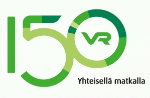

|
Kouvolan
pienoisrautatiemuseo semaforo-trenorama !

Auf diesen Seiten finden Sie
zahlreiche Informationen zu unserem Modelleisenbahnmuseum (pienoisrautatiemuseo)
in der Stadt Kouvola
und techn. Spielzeugausstellung mit dem Schwerpunkt Modellbahnen, hier aber auch
unsere Öffnungszeiten. Sommer: Mai - September alle Tage von 10 - 18
Eisenbahn,
Zug, Züge, Dampflok, Diesellok, Waggon, Modelleisenbahn, digitale Zugsteuerung,
Computersteuerung, Steuerung und Software, Meccano, Stockys, Fishertechnik,
LEGO, Anker, BRIO, märklin, ROCO, PIKO; Hornby; LIONEL; Fleischmann, BUCO, WESA, Bing und HAG.
Tips und Tricks zu den Themen Modellandschaft, Modellbauhobby, 1:11,
1:22, 1:43/45, 1:32, 1:87, 1:120, 1:160, 1:220, Modelleisenbahn und für uns ganz
wichtig, wir haben NICHT die grösste H0 Modellbahn Europas oder sogar der Welt.
Dafür können wir uns noch persönlich um die Besucher kümmern. Wir sind zwar
nicht die grössten aber ein Museum bzw. Modelleisenbahn Show mit Charme und dem
gewissen etwas das nur ein kleiner Bieten kann, werden aber oft als "die
Ausstellung" als solches gesucht und auch gefunden. Man muss uns einfach gesehen
haben, ganz einfach eine schmucke Sache und dies seit 2003 an über 230 Tagen pro
Jahr ohne Staatliche oder EU Subventionen. Finanziert und unterstützt durch die
vielen Besucher aus der ganzen Welt, dafür allen ein GROSSES Dankeschön
Falls Sie nach Modellbahn,
Modellanlage, Modelleisenbahn, Modellbauanlage gesucht haben, dann sind Sie
endlich richtig gelandet und Sie haben sich nicht vertippt. Modell- wird nämlich
nicht mit einem L geschrieben, ausser im engl. Sie sind nun endlich auf der Webseite von
dem
Modelleisenbahnmuseum Kouvola, dem finnischen Kulturzentrum für Modelleisenbahnen, Freizeit- und Ausflug-Tipp in der
berühmten finnischen Eisenbahnerstadt Kouvola mit einem Schienenanschluss
seit 1862. Kouvola liegt ganz in der Nähe vom Hafen Porvoo, Hamina und Kotka, am südlichen Rande,
das Tor zu der finnischen Seenplatte, im Dreieck von Mikkeli, Lahti und
Lappeenranta, ein Katzensprung von Helsinki und St.Petersburg dem Venedig des
Nordens. Es wird geleitet, unterhalten, finaziert und betreut von den
Beiden unentwegten Erwin und Marja-Leena Stämpfli - Heinola. Diese Modellbahn-Show ist aus der Initiative von
Erwin und Leena, ab den 70er Jahren entstanden. Ausdrücklich möchten wir darauf
hinweisen, dass wir ein rein Privates und unabhängiges Familienunternehmen sind.
Freie Sponsoren sind uns aber immer willkommen. Suomen Handelsbanken IBAN:
FI6831313001154475, BIC/Swift: HANDFIHH, UsID FI17311112
Vielen Dank gebührt auch den Übersetzern der fremdsprachigen
Seiten.
Jean-Pierre Audétat Schweiz, Pamela Arnaud Schweiz, Liisa Bergman
Schweden
Ed Pols Holland, Eugene Korovyakovski St.Petersburg und Alexey Rezer
Moskau
Kari ja Liisa Nirha Lapua, Olli Savela Turku, Silvia und Jutta
Lehtinen Kouvola,
Anna aus Vantaa und Riitta aus Kerimäki
Patrizio Povegliano und Cédric Perrenoud in
Zollikofen ;-)) Schweiz.
Ein ganz besonderen Dank gilt unserem Mäzen, Frans
van de Werff aus Holland, Merci Frans !
Und zuletzt nicht vergessen, die
Stadtväter von Kouvola die uns dies ermöglicht haben.
Disclaimer
and Copyright 1996 - 2012 Erwin Stämpfli. Alle Rechte vorbehalten.
Ausgewiesene Warenzeichen,
Markennamen und deren Bilder gehören ausschliesslich ihren jeweiligen Eigentümern.
Die Namen
Onkapannu, pienoisrautatiemuseo, semaforo, trenorama und das Logo sind Eigentum
von Erwin und Marja-Leena Stämpfli.
|